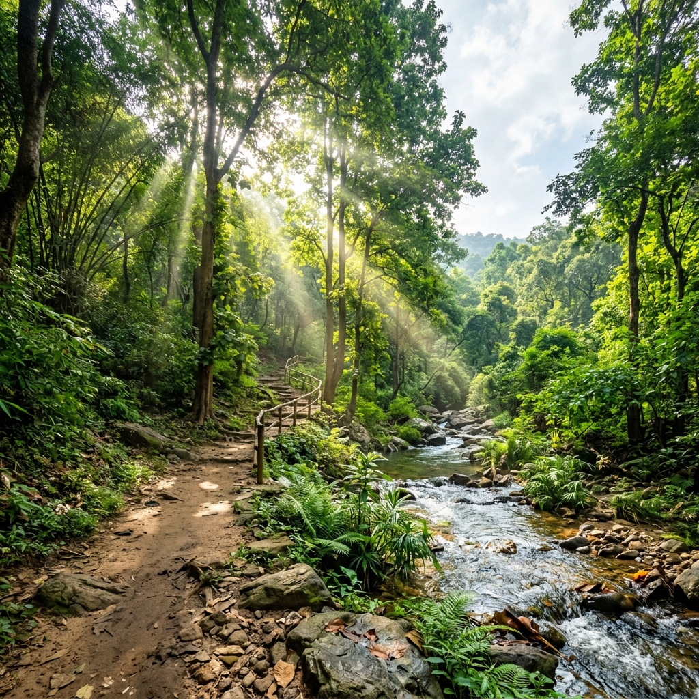

About Amirthi Forest & Zoological Park
Tucked away about 25 kms from Vellore is the picturesque Amirthi Forest. While one part of the area is maintained and developed as a wildlife sanctuary, a portion of it is open to tourists. Spread over 25 hectares, Amirthi Zoological Park is a popular getaway or picnic spot.
The area is lush with trees, herbal plants and different varieties of birds and animals. There is a small waterfall tucked away amidst the ravines and hills.
Located under the Javadu Hills of Tellai, Amirthi offers a reasonable getaway. There is a play park for kids. You can enjoy a good walk along the meandering path cut along the rock steps. Check out accommodation options and facilities from the local forest authorities.